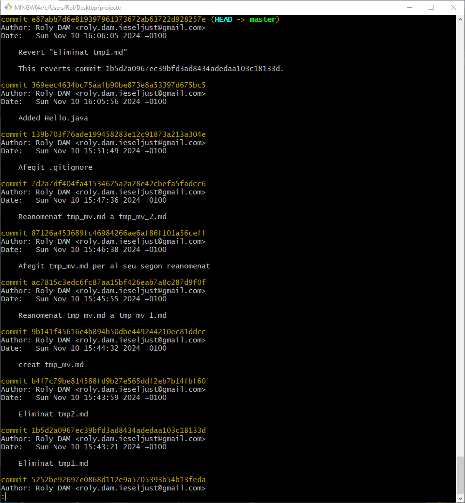
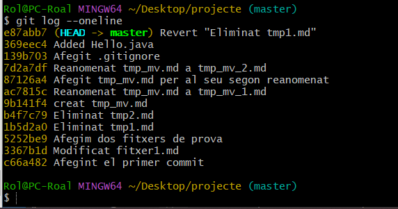

El sistema de control de versiones distribuido git
Ejercicio 1
Mentre vas realitzant els diferents passos, ves fent una xicoteta guía en markdown del que consideres més important, relacionant-ho amb l'apartat de teoría.
Anota en ella els diferents canvis que vas fent sobre el teu directori de treball.
Anotaciones de comandos:
-
Instalación/comprobación de versión/ayuda
sudo apt update
sudo apt install git
git --version
git help ordre -
Inicializar repositorio *donde estas:
git init -
Configurar usuario:
git config --global user.name "Tu Nombre"
git config --global user.email "email@ejemplo.com" -
Estado:
git status -
Añadir archivos:
Preparar archivos para el commit:
git add <file> -
Eliminar archivo del repositorio y del sistema de archivos:
git rm <file>Para quitar un archivo del control de Git sin borrarlo fisicamente:
git rm --cached <file> -
Deshacer cambios:
git restore archivo.txtElimina el archivo “file” del área de preparación (staging area), pero no afecta los cambios realizados en el archivo en tu espacio de trabajo. Es útil para deshacer un
git addantes de hacer un commit.
git restore --staged <file> -
Guardar cambios:
git commitRegistra cambios en el historial:
git commit -m “Comentario” -
Omitir
git add: Esto incluye automáticamente todos los archivos rastreados que hayan sido modificados (pero no nuevos).
git commit -a -m "Mensaje del commit"Esto guarda los cambios directamente. Nota: Los archivos nuevos aún necesitan
git add. -
Consultar historial:
git logDe forma más simplificada:
git log --oneline -
Deshace un commit específico:
Deshace un commit específico creando un nuevo commit que invierte sus cambios, sin alterar el historial. Es ideal para mantener el historial limpio y sin eliminar commits previos.
git revert <id> -
Eliminar archivos:
Elimina archivos no rastreados (no versionados por Git) de tu espacio de trabajo, como archivos temporales o generados.
git clean-f(force) obliga la limpieza, ya que Git no ejecuta este comando por defecto sin confirmación para evitar borrados accidentales.
git clean -f-delimina carpetas no rastreadas junto con los archivos no rastreados.
git clean -f -d -
Listar las ramas existentes:
Te muestra todas las ramas disponibles en el repositorio.
git branch -
Crear una nueva rama:
Crea una nueva rama con el nombre que elijas, pero no te cambia automáticamente a ella.
git branch <rama> -
Cambiar a otra rama:
Cambia a la rama que indiques para trabajar en ella.
git checkout <rama> -
Eliminar una rama:
Borra una rama que ya no necesites, pero solo si está completamente fusionada.
git branch -d <rama> -
Restablecer el repositorio a un commit anterior:
Restablece todos los archivos del repositorio al estado exacto de un commit anterior. Advertencia: Los cambios posteriores no guardados pueden perderse.
git reset --hard <id_commit>
El archivo .gitignore le dice a Git qué archivos o carpetas no debe incluir en el control de versiones. Es útil para evitar subir datos sensibles, archivos temporales o generados automáticamente, como logs o configuraciones locales.
Este archivo debe hacerse un add y un commit.
Este archivo contiene varias líneas que seguirán las siguientes reglas:
- Cada línea contendrá un patrón.
- Se admiten líneas en blanco como separador para mejorar la legibilidad.
- Los comentarios comienzan con
#. - El prefijo
!niega el patrón (hará que sí incluyan a git los archivos indicados). - Podemos utilizar el comodín
*para indicar cualquier cadena de caracteres. - Podemos utilizar la interrogación (
?) para reemplazar a un carácter cualquiera. - Podemos utilizar expresiones regulares tipo
[0-9],[ao].
Ejemplo de fichero .gitignore.
# Ignorar els fitxers amb nom temporal_6.txt i temporal_7.zip
temporal_6.txt
temporal_7.zip
# Ignorar els fitxers amb extensió zip, gz, changes o deb:
*.zip
*.gz
*.changes
*.deb
# Ignorar els fitxers amb extensió .log de la carpeta log, així
# com les extensions .log0, .log1, log2...
log/*.log
log/*.log[0-9]
# Ignorar tots els fitxers del directori imatges
imatges/*
# Ignorar tots els fitxers que acaben en 'a' o 'o' de la
# carpeta compilats
compilats/*[ao]
Ejercicio 2
Una vegada hages finalitzat, còpia com a codi el resultat de l'ordre:
git log
I adjunta al final del document també una captura de pantalla del resultat de:
git log --oneline


[Recursos]
https://joamuran.net/curs24_25/edd/ud3_scv/5.svc_git/ https://joamuran.net/curs24_25/edd/ud3_scv/6.branques/